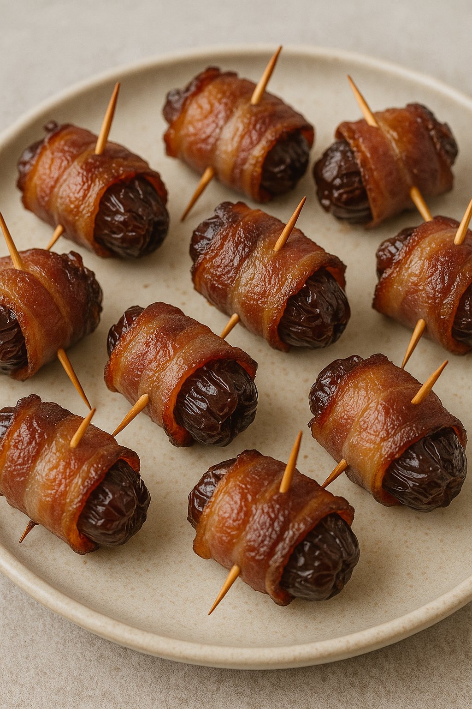

Devils on Horseback

Sweet dates stuffed with smoked almonds and wrapped in bacon.
Yield: 20 pieces |
Prep Time: 20 minutes |
Cook Time: 15–25 minutes
Devils on Horseback Ingredients
- 20 wooden toothpicks
- ¼ cup reduced-sodium soy sauce
- ½ teaspoon ground ginger
- ¾ cup dark brown sugar, plus extra for sprinkling (optional)
- 20 dates, pitted and left whole
- 20 whole smoked almonds
- 10 bacon slices, cut in half crosswise
Directions
- Preheat oven to 400°F (200°C). Soak toothpicks in water and lightly grease a 9×13-inch baking dish.
- Mix soy sauce and ground ginger in one bowl and place brown sugar in another.
- Stuff each date with a smoked almond, wrap with half a slice of bacon, secure with a toothpick, dip
in soy mixture, then roll in brown sugar.
- Arrange in the baking dish and bake 15–25 minutes, until bacon is browned and crisp.
- Cool about 15 minutes and serve warm or at room temperature.